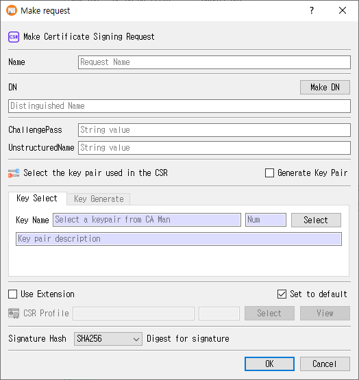

Make Request Dialog Guide
This guide explains the Make request dialog used to create a certificate signing request (CSR). Open it from Tools > Make Request (Shift+F2). A database connection is required.

Create a CSR
- Enter a Name for the request.
- Enter the subject DN (Distinguished Name), or click Make DN to compose it with the DN editor.
- Optionally enter ChallengePass and UnstructuredName values.
- Choose how to provide the signing key:
- Keep Generate Key Pair unchecked and use Key Select to choose an existing key pair.
- Check Generate Key Pair to create a new key pair in this dialog, then use Key Generate to set its name, algorithm, and parameters.
- Optionally check Use Extension and select a CSR profile. Use View to inspect the selected profile.
- Choose the Signature Hash when the selected key algorithm supports a separate hash.
- Click OK to create and save the CSR. Click Cancel to close without submitting it.
The request name and DN are required. If extensions are enabled, a CSR profile must be selected. If using an existing key, select a key pair first. On success, CertMan saves the request, marks the associated key pair as used, refreshes the Request list, and displays CSR created.
Request information
| Field or control | Purpose |
|---|---|
| Name | Required name for the CSR record. |
| DN | Required subject distinguished name encoded in the request. |
| Make DN | Opens the DN editor, retaining the current DN as its starting value. |
| ChallengePass | Optional challenge password attribute. |
| UnstructuredName | Optional unstructured name attribute. |
| Signature Hash | Selects the digest used for the CSR signature when applicable. The initial value comes from the application's default hash setting. |
Select an existing key pair
When Generate Key Pair is unchecked, the Key Select tab is used:
| Field or control | Purpose |
|---|---|
| Key Name | Read-only name of the selected key pair. |
| Num | Read-only database record number for the key pair. |
| Select | Opens the CA Manager selection dialog. Choose a key pair and confirm. |
| Key pair description | Read-only description of the selected key pair. |
The key's algorithm and parameters are taken from the selected database record. For PKCS#11 or KMIP keys, the corresponding configured provider is used to create the CSR signature.
Generate a new key pair
Check Generate Key Pair to switch to the Key Generate tab. The existing-key tab becomes unavailable until the checkbox is cleared.
| Field or control | Purpose |
|---|---|
| Key Name | Required database name for the newly generated key pair. CertMan may suggest the request name followed by _keyPair. |
| Mechanism | Select RSA, ECDSA, DSA, EdDSA, or SM2. The PQC row contains ML-DSA and SLH-DSA. |
| Public Exponent | RSA public exponent, initially 65537; disabled for algorithms that do not use it. |
| Key Length / parameter dropdown | Select the mechanism-specific key size, curve, or parameter set. Defaults to RSA 2048 unless changed by a saved key-generation preference. |
| To PKCS#11 | Generate the key through a configured PKCS#11 token/HSM when supported and available. |
| To KMIP | Generate through KMIP. This control is shown in Pro and depends on the configured KMIP provider. |
The available key parameters follow the choices in the New keypair dialog: RSA sizes 1024, 2048, 3072, 4096, and 8192; DSA sizes 1024, 2048, and 3072; supported named curves for ECDSA; Ed25519/Ed448; SM2; ML-DSA-44/65/87; and the SLH-DSA SHA2/SHAKE parameter sets. Exact availability can depend on the selected storage provider and edition.
CSR profile and extensions
- Use Extension enables the CSR profile controls.
- CSR Profile displays the selected profile name and record number. Click Select to choose a profile; click View to inspect it.
- The Set to default checkbox beside the extension controls saves the extension/profile selection for later use. The last selection is restored when the dialog is opened again.
- When a profile includes Subject Key Identifier or Authority Key Identifier extensions, CertMan derives the key identifier from the public key while building the request.
Signature hash behavior
The hash dropdown is disabled for EdDSA, ML-DSA, and SLH-DSA, whose signature algorithms determine the digest behavior. Selecting SM2 sets the hash to SM3. When an existing key pair is selected, the dialog adjusts hash availability based on that key.
Edition and configuration notes
- In the unlicensed version, RSA is selected and the other mechanism choices are disabled.
- To PKCS#11 is disabled when the PKCS#11 context is unavailable. PKCS#11 use also requires valid settings and an accessible session.
- To KMIP is hidden outside Pro. It requires KMIP configuration.
- Some algorithm/storage combinations are restricted by the dialog. For example, PKCS#11 selection disables SM2 and the PQC mechanisms in the key-generation controls.
- For internally stored keys, CertMan uses its private-key password feature when that feature is enabled.
Related implementation
This guide is based on images/make_req_dlg.png, src/CertMan/make_req_dlg.ui, src/CertMan/make_req_dlg.h, src/CertMan/make_req_dlg.cpp, and the Tools > Make Request action in src/CertMan/mainwindow.cpp.